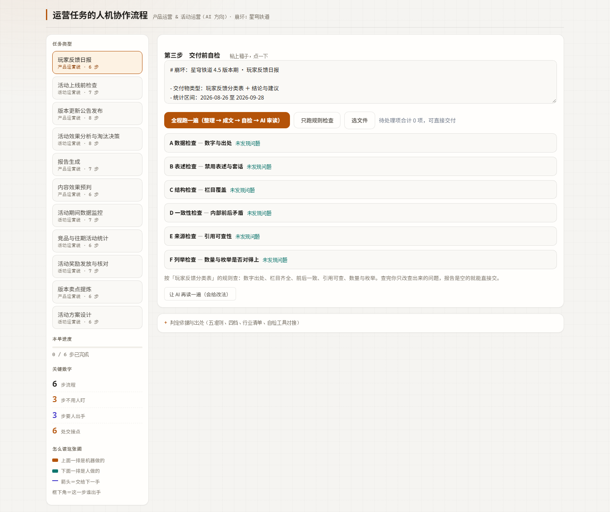

OpsFlow — 运营任务 AI 分工与评测工具
把 12 项岗位任务拆成 74 步，每一步写清 AI 做什么、人做什么、在哪交接、凭什么这么分。
四件事刻意不自动：定口径、风险定级、写结论、签字放行。
39/39 检出0 误报91.7% 一致率
泳道示意 · 玩家反馈日报箭头 ＝ 交接点
机器
人
六步里只有两步必须人拍板，其余交给机器，人只看例外。
它解决什么
12 项岗位任务拆成 74 步，每步六个字段：AI 做什么、人做什么、在哪交接、产出什么、出错怎么办、凭什么这么分
第 12 项福利规划与付费点设计登记为不画，理由写在流程数据里
A 到 F 六模块检查规则，外置成 JSON，改规则不用改代码；注入 39 项全部检出
规则字段：检查项、判据、所属模块、命中示例
人工标注校准一致率、漏放行、分模块 P/R/F1、版本键 drift 日志
六套测试 + 两份负向测试，负向测试用来证明检查真的会响
规则外置成 JSON，改口径不用改代码。
改一条规则要动三个字段：
检查项写在哪、判据是什么、
命中后归哪个模块
{"module":"A","check":"数字有出处","basis":"无出处即报"}
一次真实跑通
用 41 条公开渠道的真实玩家反馈跑了一遍，从贴原始反馈到出自检通过的日报。
繁体保原文不转写，来源写清是官方公告、TapTap 还是 PTT。
渠道、日期、原文三样都留在表里，不合并成一句总结。
按功能故障、体验问题、玩法建议、数值平衡、内容合规五类分开统计。
边界条目记主类，另记备选归属。
自检按 A 到 F 六模块逐项判定，缺栏单独列出。
自检第一次报 3 项缺栏，补完后第二次 0 项。
